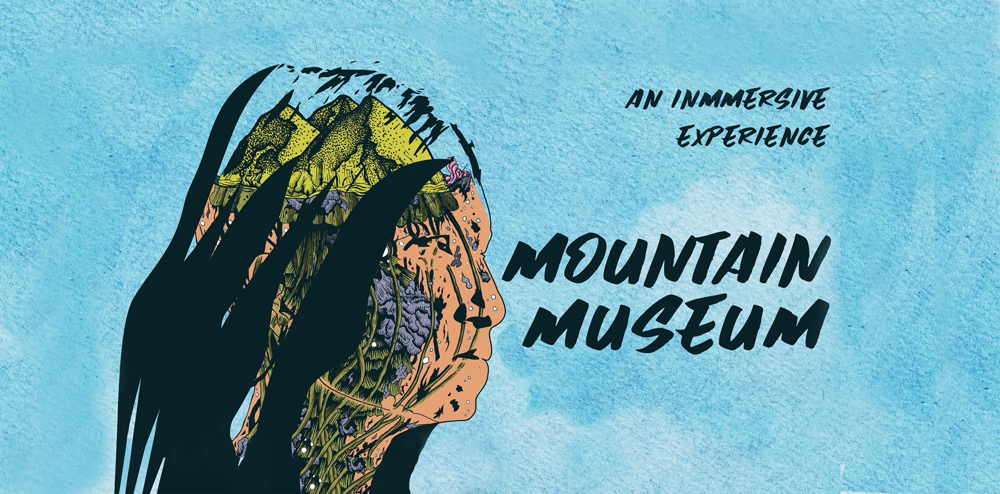
Mountain Museum
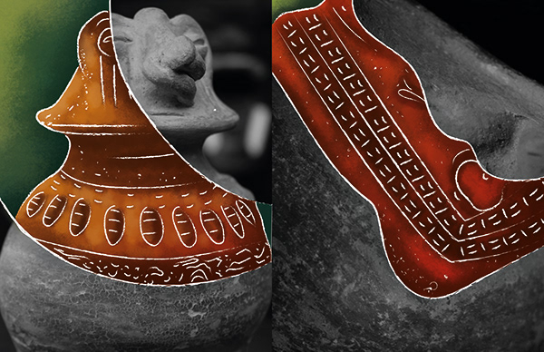
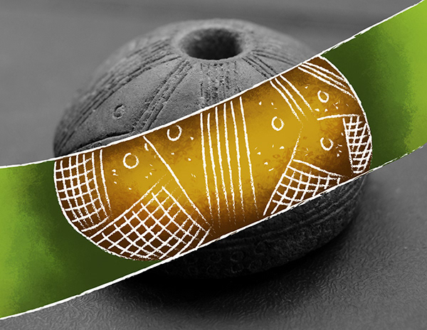
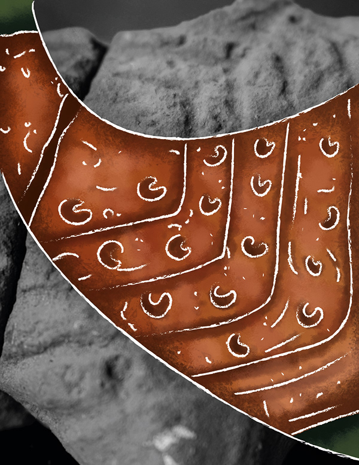
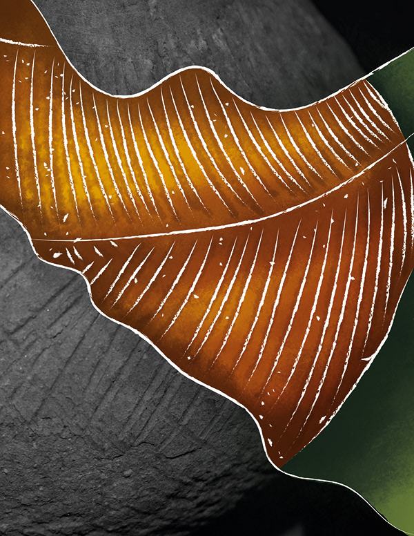
In 2000, in the mountains of a municipality known today as “Corinto”, in southern Colombia, immersed in the complexities of war, pre-Columbian tombs and ceramics began to appear in the fields of peasants, in the crops of indigenous people and in the traverses of guerrillas.
The FARC, together with the inhabitants of the region, began to recover these objects and created a community museum that today is inaccessible due to the persistence of the armed conflict, drug trafficking and abandonment.
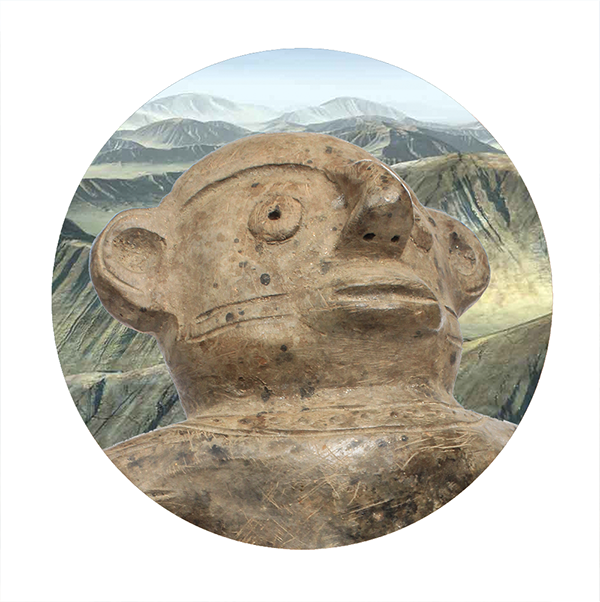
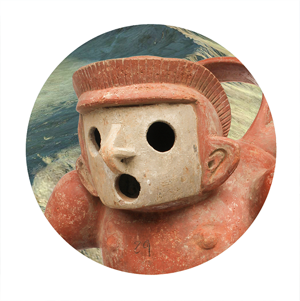
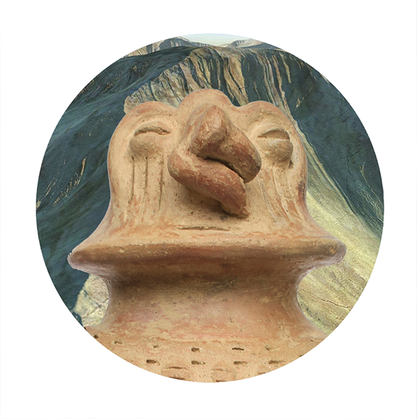
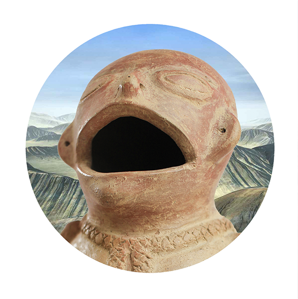
The Mountain as a Museum
The “Mountain as a museum” is a VR proposal of the La Cristalina archaeological collection and is based on three principles agreed with the community:
- The collection belongs to the village and its inhabitants, and therefore the museum must remain there.
- The exhibitions should be based on the idea of an “open door” museum to provide a better reach and contact from the local, regional, national, and international communities with the territory, the museum, and the collection.
- The curatorial proposals—present and future—must allow the inclusion of the different points of view (Polyphony) of each one of the communities that encounter in the territory and the museum: the ex-guerrillas, the peasants, and the indigenous people.
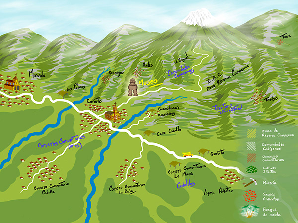
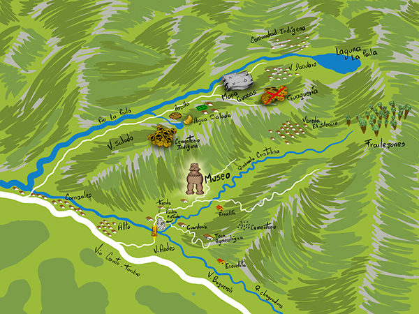
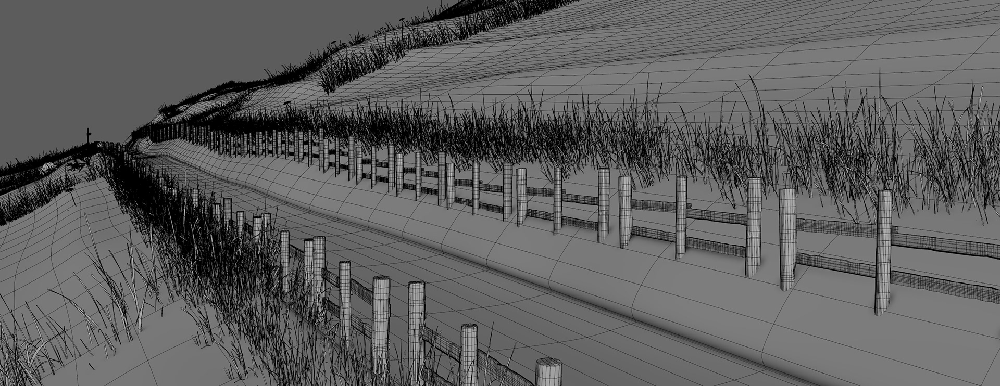
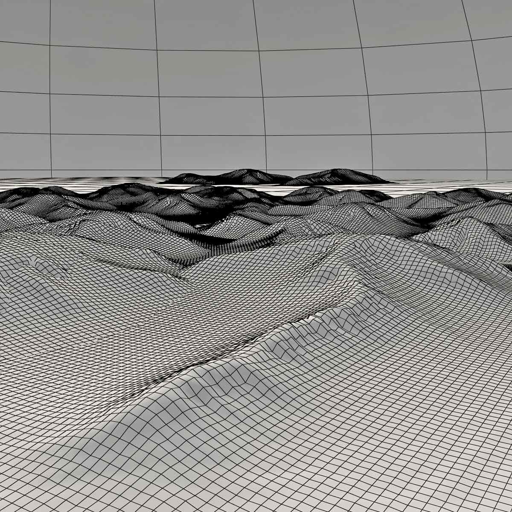
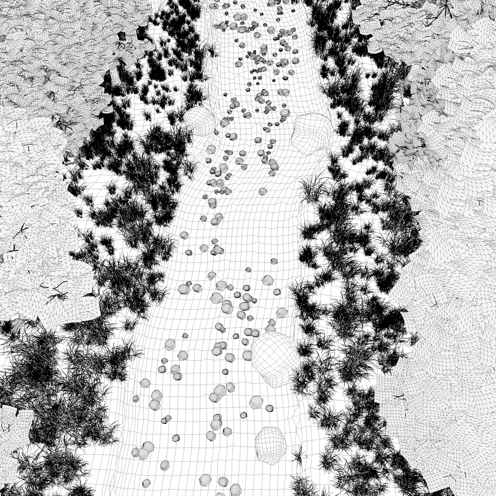
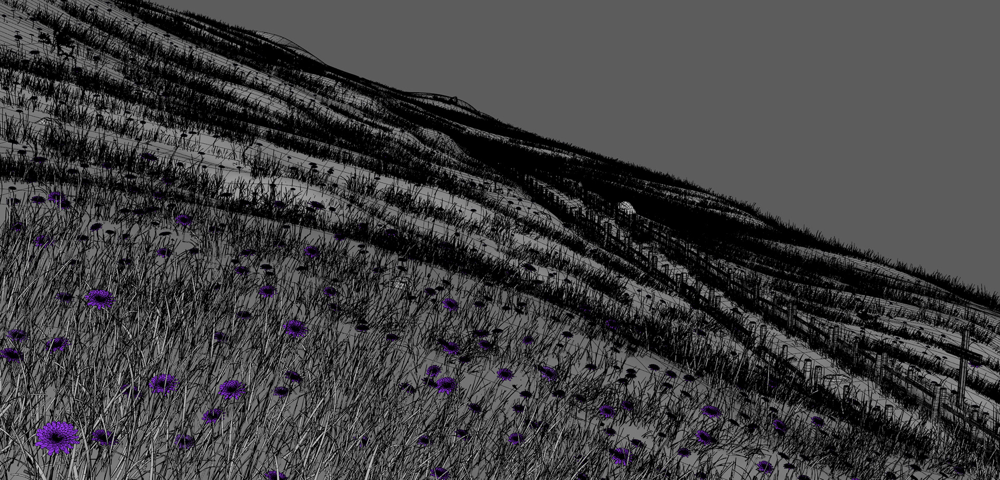
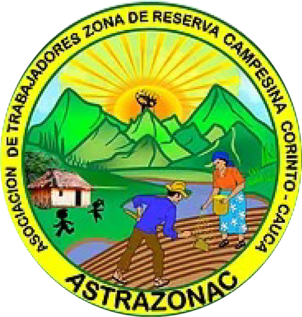
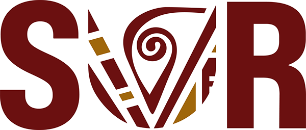